Windows7 基础入门教程
作者：TeliuTe 来源：基础教程网
十四、上网浏览 返回目录 下一课上网是电脑应用的一个重要功能，我们来学习一下如何浏览网页；
1、打开网页
1）点击任务栏中的大e图标，打开 IE 浏览器；
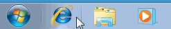
2）默认打开微软的msn主页；
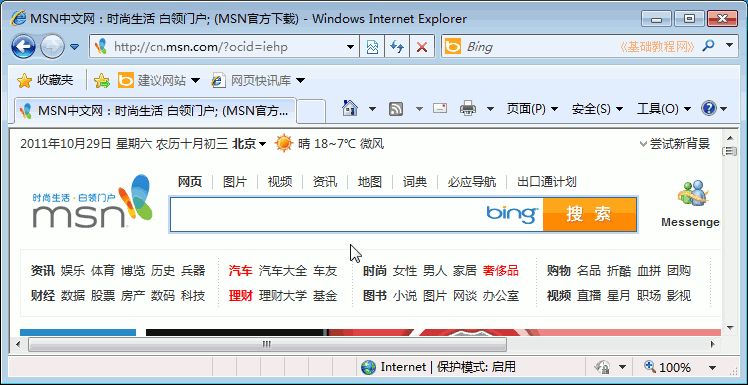
3）在上边的地址栏中，输入好123的网址 http://www.hao123.com ，然后点右边的“转到”箭头按钮，注意瞄准了再点；
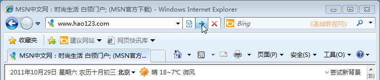
4）这样就打开了好123网址页面，其他网站也同样输网址，点转到按钮；
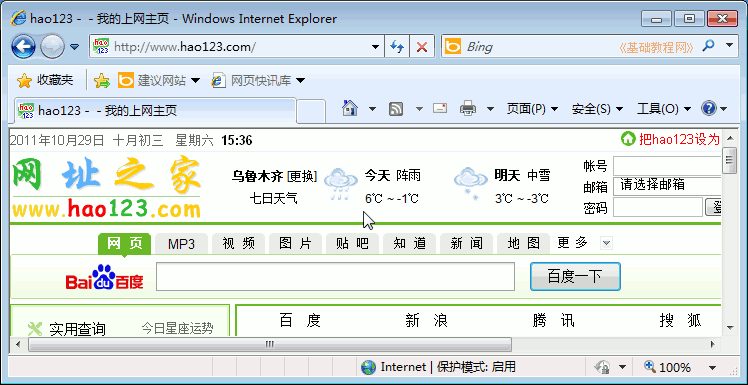
2、设置主页
1）点右边工具栏上的“工具”按钮，选择“Internet 选项”菜单，；
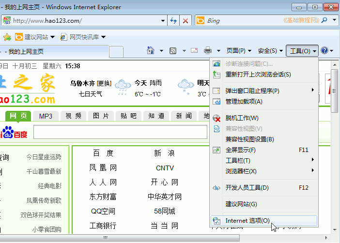
2）在出来的选项对话框中间，输入自己的上网主页，也就是一打开浏览器就显示的网页，然后点右下角的“应用”按钮，完成主页设置；
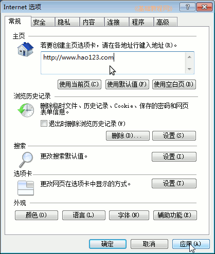
3）再点下边的选项卡右边的“设置”按钮，设置标签打开方式；
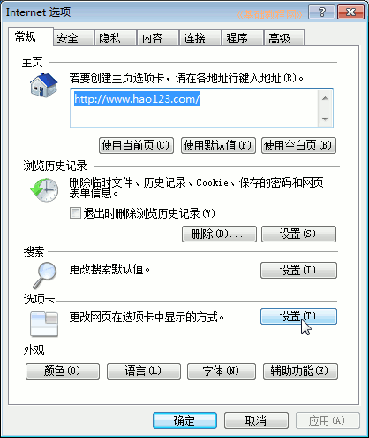
4）在下边的“遇到弹出窗口时”，选中“始终在新选项卡中打开窗口”，点确定返回；
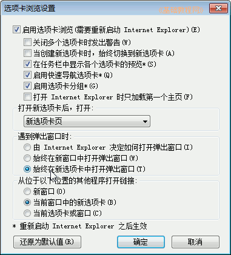
5）这样在点击一个链接时，就会在新标签中打开它，而不必开许多窗口，标签旁边是“新建标签”按钮；
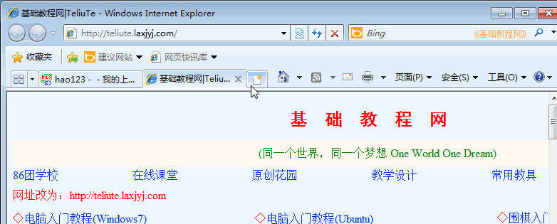
3、设置工具栏
1）点菜单“工具－工具栏”可以显示或去掉一些工具栏，这样就可以显示更多的页面内容；
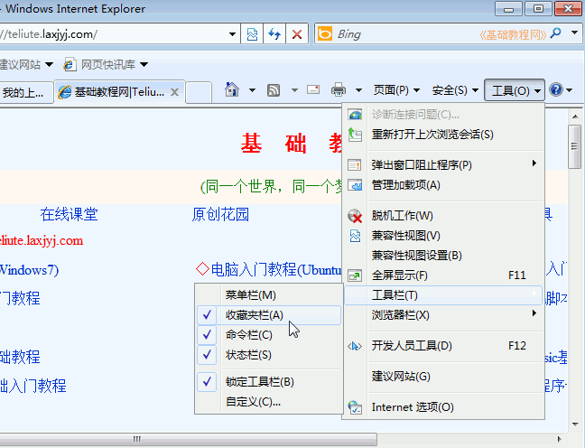
2）如点“工具－工具栏－收藏夹栏”，就可以去掉收藏夹栏，想要显示再勾上即可；
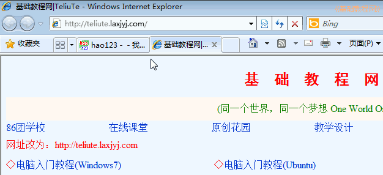
3）上边地址栏的右边有几个按钮，双箭头的是刷新页面，红叉是停止载入页面；
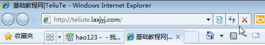
本节学习了用IE浏览器上网浏览网页的基础知识，如果你成功地完成了练习，请继续学习下一课内容；
本教程由86团学校TeliuTe制作|著作权所有
基础教程网：>http://teliute.org/
美丽的校园……
转载和引用本站内容，请保留版权信息和本站链接。